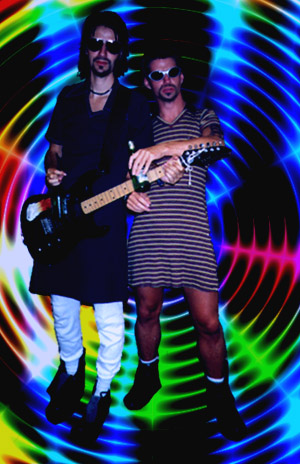

Brixton felt the band needed a slight update to their image. So, Dave's
grown a Dave Gahan haircut, ca Violator era, MC has gone all James Hetfield,
and CC has adopted a slightly more Axl Rose-ish look.
The music will change too, says Brixton. There will be more synths &
drum-machines. And more guitars. And more noise. And
everything will be much louder. Just like in the future.

Meanwhile, their graphic designer has started experimenting with LSD.